Truncation and Coarsening: When Data Loses Precision
Source:vignettes/truncation-coarsening.Rmd
truncation-coarsening.Rmd
library(margot.sim)
#> margot.sim 0.1.3
library(ggplot2)
library(dplyr)
#>
#> Attaching package: 'dplyr'
#> The following objects are masked from 'package:stats':
#>
#> filter, lag
#> The following objects are masked from 'package:base':
#>
#> intersect, setdiff, setequal, union
library(tidyr)
set.seed(2025)Introduction
Real-world data collection often involves limitations that reduce the precision of our measurements. Two common forms of information loss are:
- Truncation: When values beyond certain thresholds cannot be observed
- Coarsening: When continuous data is recorded in categories or bins
This vignette demonstrates how to model these realistic data limitations using margot.sim’s shadow framework, and shows how they can bias causal effect estimates.
Truncation Shadows
Understanding Truncation
Truncation occurs when measurement instruments or data collection protocols have hard limits. Unlike censoring (where we know a value exists but not its magnitude), truncation means we may not even know that extreme values exist.
Common examples: - Laboratory equipment with measurement ranges (e.g., pH meters reading 0-14) - Survey instruments with bounded scales - Administrative data with top-coding for privacy
Basic Truncation Example
Let’s simulate a study of income and health satisfaction, where income reporting is truncated:
# simulate data with income and satisfaction
n <- 1000
# first create baseline data with income
baseline_data <- data.frame(
id = 1:n,
b1 = rnorm(n),
b2 = rbinom(n, 1, 0.5),
t0_income = 50000 + 10000 * rnorm(n) + 20000 * rbinom(n, 1, 0.3) + rnorm(n, 0, 15000)
)
# ensure positive income
baseline_data$t0_income[baseline_data$t0_income < 0] <- 10000
# add treatment based on income
baseline_data$t1_a <- with(baseline_data, {
prob <- plogis(-2 + 0.00002 * t0_income)
rbinom(n, 1, prob)
})
# add outcome
baseline_data$t1_satisfaction <- with(baseline_data, {
5 + 0.00001 * t0_income + 0.5 * t1_a + rnorm(n, 0, 1)
})
sim_data <- list(data = baseline_data)
# create income truncation shadow (survey caps at $150k)
truncation_shadow <- create_truncation_shadow(
variables = "t0_income",
upper = 150000,
type = "simple"
)
# apply shadow
data_truncated <- apply_shadow(sim_data$data, truncation_shadow)
# compare distributions
par(mfrow = c(1, 2))
hist(data_truncated$t0_income_true,
main = "True Income Distribution",
xlab = "Income ($)",
col = "lightblue",
breaks = 30)
abline(v = 150000, col = "red", lwd = 2, lty = 2)
hist(data_truncated$t0_income,
main = "Observed Income Distribution",
xlab = "Income ($)",
col = "lightcoral",
breaks = 30)Impact on Causal Effects
Truncation can bias causal effect estimates, especially when treatment assignment depends on the truncated variable:
# compare treatment assignment patterns
true_effects <- compute_causal_effects(
data_truncated,
exposure = "t1_a",
outcome = "t1_satisfaction"
)
# create a version where treatment uses observed (truncated) income
data_realistic <- sim_data$data
data_realistic$t1_a_realistic <- with(data_truncated, {
# reassign treatment based on observed income
prob <- plogis(-2 + 0.00002 * t0_income)
rbinom(n, 1, prob)
})
realistic_effects <- compute_causal_effects(
data_realistic,
exposure = "t1_a_realistic",
outcome = "t1_satisfaction"
)
# compare
cat("True ATE (treatment based on true income):", round(true_effects$ate, 3), "\n")
#> True ATE (treatment based on true income): 0.559
cat("Realistic ATE (treatment based on truncated income):", round(realistic_effects$ate, 3), "\n")
#> Realistic ATE (treatment based on truncated income): 0.272
cat("Bias:", round(realistic_effects$ate - true_effects$ate, 3), "\n")
#> Bias: -0.288Boundary Effects
Sometimes truncated values pile up at the boundary rather than becoming missing:
# create boundary truncation (e.g., scale that shows "MAX" at 150k)
boundary_shadow <- create_truncation_shadow(
variables = "t0_income",
upper = 150000,
type = "boundary"
)
data_boundary <- apply_shadow(sim_data$data, boundary_shadow)
# visualise pile-up
ggplot(data.frame(
income = data_boundary$t0_income,
truncated = data_boundary$t0_income_truncated
), aes(x = income, fill = truncated)) +
geom_histogram(bins = 50, alpha = 0.7) +
scale_fill_manual(values = c("FALSE" = "lightblue", "TRUE" = "red"),
labels = c("Within range", "Piled at boundary")) +
labs(title = "Income Distribution with Boundary Pile-up",
x = "Observed Income ($)",
y = "Count",
fill = "Status") +
theme_minimal()Coarsening Shadows
Understanding Coarsening
Coarsening occurs when continuous data is recorded in categories, losing precision. This is extremely common in practice: - Age recorded in groups (18-24, 25-34, etc.) - Income in brackets - Likert scales from continuous measures - Privacy-preserving data release
Basic Coarsening Example
# simulate age and health outcome data
n <- 1000
age_health_data <- list(
data = data.frame(
age = runif(n, 18, 80),
sex = rbinom(n, 1, 0.5)
)
)
# add health outcome that declines with age
age_health_data$data$health <- with(age_health_data$data, {
100 - 0.5 * (age - 50) - 0.2 * (age - 50)^2/100 +
5 * sex + rnorm(n, 0, 10)
})
# coarsen age into 10-year groups
age_coarsen <- create_coarsening_shadow(
variables = "age",
breaks = c(0, 30, 40, 50, 60, 70, 100),
labels = c("18-29", "30-39", "40-49", "50-59", "60-69", "70+"),
type = "midpoint"
)
data_coarsened <- apply_shadow(age_health_data$data, age_coarsen)
# show information loss
print(head(data.frame(
true_age = data_coarsened$age_true,
age_group = data_coarsened$age,
midpoint = as.numeric(as.character(data_coarsened$age))
), 10))
#> Warning in data.frame(true_age = data_coarsened$age_true, age_group =
#> data_coarsened$age, : NAs introduced by coercion
#> true_age age_group midpoint
#> 1 37.41041 30-39 NA
#> 2 73.96634 70+ NA
#> 3 70.01563 70+ NA
#> 4 78.77812 70+ NA
#> 5 64.21951 60-69 NA
#> 6 21.48280 18-29 NA
#> 7 44.08102 40-49 NA
#> 8 35.52442 30-39 NA
#> 9 31.70956 30-39 NA
#> 10 19.48341 18-29 NADifferent Coarsening Approaches
The shadow framework supports multiple ways to handle coarsened data:
# create income data
income_data <- data.frame(
income = rlnorm(500, log(50000), 0.5)
)
# define income brackets
breaks <- c(0, 25000, 50000, 75000, 100000, 150000, Inf)
# midpoint assumption
shadow_mid <- create_coarsening_shadow(
"income", breaks = breaks, type = "midpoint"
)
# lower bound assumption
shadow_lower <- create_coarsening_shadow(
"income", breaks = breaks, type = "lower"
)
# random within interval
shadow_random <- create_coarsening_shadow(
"income", breaks = breaks, type = "random"
)
# apply all three
data_mid <- apply_shadow(income_data, shadow_mid)
data_lower <- apply_shadow(income_data, shadow_lower)
data_random <- apply_shadow(income_data, shadow_random)
# compare results
comparison <- data.frame(
true = income_data$income,
midpoint = data_mid$income,
lower = data_lower$income,
random = data_random$income
) %>%
pivot_longer(-true, names_to = "method", values_to = "observed")
ggplot(comparison, aes(x = true, y = observed)) +
geom_point(alpha = 0.5, size = 0.8) +
geom_abline(slope = 1, intercept = 0, col = "red", lty = 2) +
facet_wrap(~method) +
scale_x_continuous(labels = scales::dollar) +
scale_y_continuous(labels = scales::dollar) +
labs(title = "Different Coarsening Assumptions",
x = "True Income",
y = "Observed Income") +
theme_minimal()Heaping: Realistic Response Patterns
People often round their responses to “nice” numbers. The heaping option models this behaviour:
# simulate age reporting with heaping
true_ages <- data.frame(
age = runif(1000, 20, 70)
)
# create heaping shadow - people round to 0s and 5s
heaping_shadow <- create_coarsening_shadow(
variables = "age",
breaks = 10, # 10 bins
type = "heaping",
heaping_digits = c(0, 5),
heaping_prob = 0.7 # 70% of people heap
)
heaped_data <- apply_shadow(true_ages, heaping_shadow)
# visualise heaping pattern
age_comparison <- data.frame(
true_age = heaped_data$age_true,
reported_age = heaped_data$age,
last_digit = heaped_data$age %% 10
)
# plot distribution of last digits
ggplot(age_comparison, aes(x = factor(last_digit))) +
geom_bar(fill = "steelblue") +
labs(title = "Age Heaping: Distribution of Last Digits",
subtitle = "People preferentially report ages ending in 0 and 5",
x = "Last Digit of Reported Age",
y = "Count") +
theme_minimal()
# show heaping visually
ggplot(age_comparison, aes(x = true_age, y = reported_age)) +
geom_point(alpha = 0.3, size = 0.8) +
geom_abline(slope = 1, intercept = 0, col = "red", lty = 2) +
labs(title = "Age Heaping Pattern",
subtitle = "Points cluster at ages ending in 0 and 5",
x = "True Age",
y = "Reported Age") +
theme_minimal()Combined Example: Income Study with Multiple Shadows
Let’s examine a realistic scenario where both truncation and coarsening affect the same study:
# simulate an income intervention study
n <- 2000
income_study <- list(
data = data.frame(
education = sample(10:20, n, replace = TRUE), # years
experience = rpois(n, lambda = 10)
)
)
# generate income based on education and experience
income_study$data$income <- with(income_study$data, {
exp(10 + 0.1 * education + 0.05 * experience + rnorm(n, 0, 0.4))
})
# add treatment (job training for lower incomes)
income_study$data$treatment <- with(income_study$data, {
prob <- plogis(2 - 0.00003 * income)
rbinom(n, 1, prob)
})
# add outcome (income change)
income_study$data$income_change <- with(income_study$data, {
change_pct <- 5 + 10 * treatment - 2 * log(income/50000) + rnorm(n, 0, 3)
income * (1 + change_pct/100) - income
})
# in practice, income data often has both issues:
# 1. top-coding for privacy (truncation)
# 2. reported in brackets (coarsening)
# first apply truncation
truncate_shadow <- create_truncation_shadow(
variables = "income",
upper = 200000,
type = "boundary" # shows as $200k+
)
# then apply coarsening
coarsen_shadow <- create_coarsening_shadow(
variables = "income",
breaks = c(0, 25000, 50000, 75000, 100000, 150000, 200000, Inf),
labels = c("<$25k", "$25-50k", "$50-75k", "$75-100k",
"$100-150k", "$150-200k", "$200k+"),
type = "midpoint"
)
# apply both shadows
data_with_shadows <- income_study$data %>%
apply_shadow(truncate_shadow) %>%
apply_shadow(coarsen_shadow)
# compute effects with true vs observed income
true_effects <- compute_causal_effects(
income_study$data,
exposure = "treatment",
outcome = "income_change"
)
observed_effects <- compute_causal_effects(
data_with_shadows,
exposure = "treatment",
outcome = "income_change"
)
# create comparison
cat("=== Impact of Truncation and Coarsening ===\n")
#> === Impact of Truncation and Coarsening ===
cat("True ATE: $", round(true_effects$ate, 2), "\n", sep = "")
#> True ATE: $8442.5
cat("Observed ATE: $", round(observed_effects$ate, 2), "\n", sep = "")
#> Observed ATE: $8442.5
cat("Bias: $", round(observed_effects$ate - true_effects$ate, 2),
" (", round((observed_effects$ate - true_effects$ate)/true_effects$ate * 100, 1),
"%)\n", sep = "")
#> Bias: $0 (0%)
# visualise the data degradation
par(mfrow = c(1, 3))
# original
hist(income_study$data$income,
breaks = 30,
main = "Original Income Data",
xlab = "Income ($)",
col = "lightgreen")
# after truncation
hist(data_with_shadows$income_true,
breaks = 30,
main = "After Truncation",
xlab = "Income ($)",
col = "lightblue")
abline(v = 200000, col = "red", lwd = 2, lty = 2)
# after coarsening
barplot(table(data_with_shadows$income),
main = "After Truncation + Coarsening",
xlab = "Income Bracket",
ylab = "Count",
col = "lightcoral",
las = 2)Monte Carlo Evaluation
Let’s systematically evaluate how different levels of truncation and coarsening affect our estimates:
# function to run simulation with varying truncation/coarsening
evaluate_information_loss <- function(truncation_point = Inf,
n_brackets = NULL,
n_sim = 100) {
results <- replicate(n_sim, {
# generate simple data
n <- 500
data <- data.frame(
score = rnorm(n, 50, 20),
treatment = NA,
outcome = NA
)
# treatment depends on score
data$treatment <- with(data, {
prob <- plogis(-1 + 0.02 * score)
rbinom(n, 1, prob)
})
# outcome depends on treatment and score
data$outcome <- with(data, {
50 + 10 * treatment + 0.5 * score + rnorm(n, 0, 10)
})
# apply shadows if specified
data_observed <- data
if (truncation_point < Inf) {
trunc_shadow <- create_truncation_shadow(
"score",
upper = truncation_point,
type = "simple"
)
data_observed <- apply_shadow(data_observed, trunc_shadow)
}
if (!is.null(n_brackets) && !is.na(n_brackets)) {
coarse_shadow <- create_coarsening_shadow(
"score",
breaks = n_brackets,
type = "midpoint"
)
data_observed <- apply_shadow(data_observed, coarse_shadow)
}
# compute effects
true_effect <- compute_causal_effects(
data,
exposure = "treatment",
outcome = "outcome"
)$ate
observed_effect <- compute_causal_effects(
data_observed,
exposure = "treatment",
outcome = "outcome"
)$ate
c(true = true_effect, observed = observed_effect)
})
# summarise results
true_effects <- results["true", ]
observed_effects <- results["observed", ]
data.frame(
mean_true = mean(true_effects),
mean_observed = mean(observed_effects),
bias = mean(observed_effects - true_effects),
relative_bias = mean((observed_effects - true_effects) / true_effects) * 100,
rmse = sqrt(mean((observed_effects - true_effects)^2))
)
}
# test different scenarios
scenarios <- expand.grid(
truncation = c(Inf, 80, 70, 60),
coarsening = c(NA, 10, 5, 3)
)
results <- do.call(rbind, lapply(1:nrow(scenarios), function(i) {
evaluate_information_loss(
truncation_point = scenarios$truncation[i],
n_brackets = scenarios$coarsening[i],
n_sim = 50
)
}))
scenarios_results <- cbind(scenarios, results)
# visualise results
scenarios_results %>%
mutate(
truncation = factor(truncation,
levels = c(Inf, 80, 70, 60),
labels = c("None", "80", "70", "60")),
coarsening_label = case_when(
is.na(coarsening) ~ "None",
coarsening == 10 ~ "10 bins",
coarsening == 5 ~ "5 bins",
coarsening == 3 ~ "3 bins",
TRUE ~ as.character(coarsening)
),
coarsening_label = factor(coarsening_label,
levels = c("None", "10 bins", "5 bins", "3 bins"))
) %>%
ggplot(aes(x = truncation, y = relative_bias, fill = coarsening_label)) +
geom_bar(stat = "identity", position = "dodge") +
labs(title = "Bias from Truncation and Coarsening",
subtitle = "Percentage bias in ATE estimates",
x = "Truncation Point",
y = "Relative Bias (%)",
fill = "Coarsening") +
theme_minimal() +
scale_fill_brewer(palette = "Set2")Practical Recommendations
Based on these analyses, here are key recommendations for handling truncation and coarsening:
For Analysts
- Document data limitations: Always check for truncation points and binning in your variables
- Consider multiple assumptions: When data is coarsened, try different approaches (midpoint, lower, random)
- Sensitivity analysis: Evaluate how results change under different assumptions about unobserved values
For Data Collectors
- Avoid unnecessary truncation: If possible, extend measurement ranges
- Record exact values: When feasible, record continuous values rather than categories
- Document thresholds: Clearly indicate any truncation or binning thresholds
Example Sensitivity Analysis
# function to perform sensitivity analysis
truncation_sensitivity_analysis <- function(data, outcome_var, truncation_var,
truncation_points = c(Inf, 90, 80, 70)) {
results <- lapply(truncation_points, function(tp) {
# apply truncation
if (tp < Inf) {
shadow <- create_truncation_shadow(
truncation_var,
upper = tp,
type = "simple"
)
data_temp <- apply_shadow(data, shadow)
} else {
data_temp <- data
}
# compute correlation
cor_val <- cor(data_temp[[truncation_var]],
data_temp[[outcome_var]],
use = "complete.obs")
data.frame(
truncation_point = tp,
correlation = cor_val,
n_observed = sum(!is.na(data_temp[[truncation_var]]))
)
})
do.call(rbind, results)
}
# example with simulated data
example_data <- data.frame(
predictor = rnorm(1000, 75, 15),
outcome = NA
)
example_data$outcome <- 2 + 0.5 * example_data$predictor + rnorm(1000, 0, 10)
sens_results <- truncation_sensitivity_analysis(
example_data,
"outcome",
"predictor",
truncation_points = c(Inf, 90, 80, 70, 60)
)
print(sens_results)
#> truncation_point correlation n_observed
#> 1 Inf 0.5877290 1000
#> 2 90 0.5112872 858
#> 3 80 0.4755568 647
#> 4 70 0.4564907 366
#> 5 60 0.4362343 155
# visualise
ggplot(sens_results, aes(x = factor(truncation_point), y = correlation)) +
geom_point(size = 4) +
geom_line(aes(group = 1)) +
labs(title = "Sensitivity to Truncation",
subtitle = "How correlation changes with different truncation points",
x = "Truncation Point",
y = "Correlation") +
theme_minimal()
Conclusion
Truncation and coarsening are pervasive in real-world data and can substantially bias causal estimates. The margot.sim shadow framework provides tools to:
- Model these data limitations realistically
- Evaluate their impact on causal inferences
- Conduct sensitivity analyses
- Design better data collection protocols
By explicitly modelling these “shadows” of reality, we can better understand the gap between what we observe and what we seek to know.
Further Reading
- See
vignette("applying-shadows")for an introduction to the shadow framework - See
vignette("measurement-error")for related measurement issues - See
vignette("monte-carlo-simple")for systematic evaluation methods